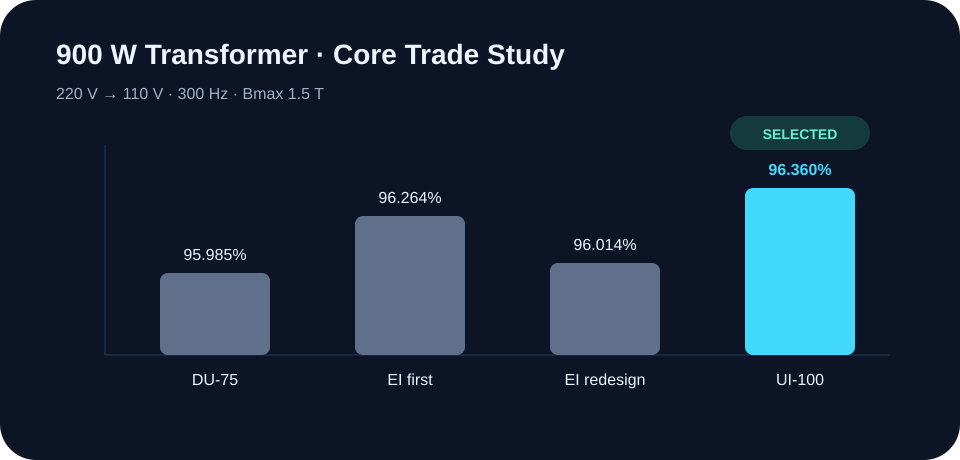
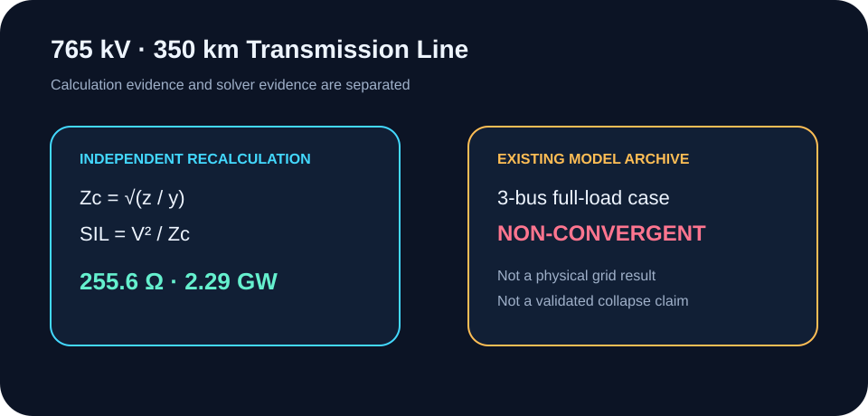
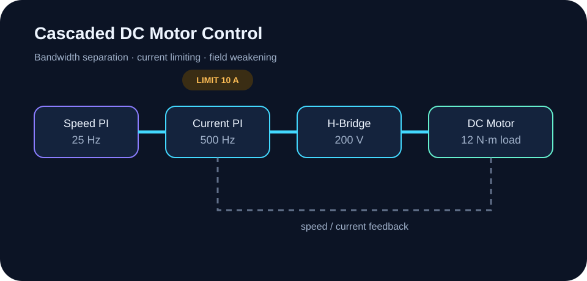
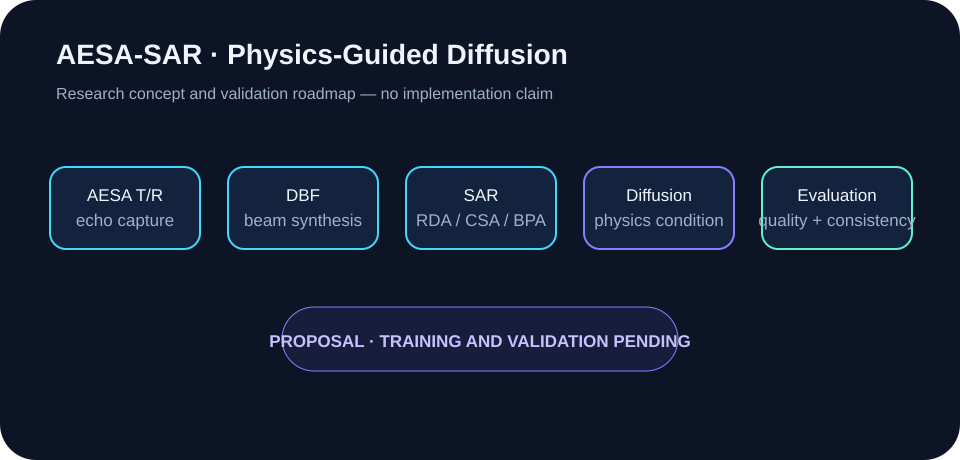

Controller Logic
회수 원본과 재구성 RTL을 분리하고, 7개 self-checking testbench로 이식성을 확인했습니다.
Case Study ↓Controller Logic부터 전기기기, 전력계통, 모터제어, RF/Microwave, 센서 시스템까지. 입력·판단·계산·검증·한계를 하나의 엔지니어링 흐름으로 재구성했습니다.
단순 결과 모음이 아니라, 디지털 논리에서 에너지 변환·계통·제어·고주파·센서 연구로 이어지는 학습의 깊이를 보여줍니다.
회수 원본과 재구성 RTL을 분리하고, 7개 self-checking testbench로 이식성을 확인했습니다.
Case Study ↓900 W 설계에서 DU/EI/UI 코어의 효율·전압변동률·창 이용률을 비교해 UI-100을 선택했습니다.
Case Study ↓765 kV 선로의 Zc와 SIL을 재계산하고 비수렴 모델과 정책 출처를 별도로 검증했습니다.
Case Study ↓500 Hz 전류 루프와 25 Hz 속도 루프, 제한기, 계자약화, 토크 리플을 근거별로 정리했습니다.
Case Study ↓Microstrip, matching, Wilkinson, hybrid의 이론 설계와 기존 Cadence 결과를 구분했습니다.
Case Study ↓DBF·SAR 영상화·physics-guided diffusion을 연결한 연구 아키텍처와 검증 로드맵입니다.
Case Study ↓네 개의 회수 원본과 세 개의 명시적 재구성 RTL을 같은 회귀 테스트에서 분석·elaborate·simulate했습니다.

220→110 V, 900 W, 300 Hz 설계에서 손실·효율·전압변동률·창 이용률을 기준으로 UI-100을 최종 선택했습니다.

선로 수식은 독립 계산으로 검증했지만, PowerWorld full-load 사례는 비수렴 디버깅 증거로만 남겼습니다. 정책 수치는 정부 원문과 교차검증했습니다.

전류 루프와 속도 루프의 이득을 재계산하고, 원본 소스와 보고서의 speed Ki 차이를 보존했습니다. 기존 PSIM 화면은 재실행 결과가 아닙니다.



3.5 GHz alumina microstrip 설계를 네 가지 회로로 확장했습니다. 이론 수치와 기존 simulation marker를 분리하고, 3.7 GHz marker를 3.5 GHz 검증으로 과장하지 않았습니다.

AESA T/R·DBF·기존 SAR 영상화·물리 조건 diffusion·평가를 하나의 연구 파이프라인으로 분해했습니다. 모델 학습, 하드웨어, 성능 향상은 주장하지 않습니다.

“완료”라는 한 단어 대신 원본, 재구성, 재계산, 기존 아카이브, 제안의 상태를 구분합니다.
과제 아카이브에서 회수한 직접 작성 소스
근거가 있는 기능을 공개 CI용으로 재작성
문서 입력과 식을 별도 스크립트로 확인
이번 환경에서 재실행하지 않은 기존 화면
구현·실증이 아닌 시스템 설계와 연구 계획
개인정보·원본 PDF·라이선스 종속 파일